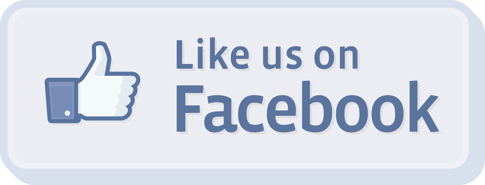
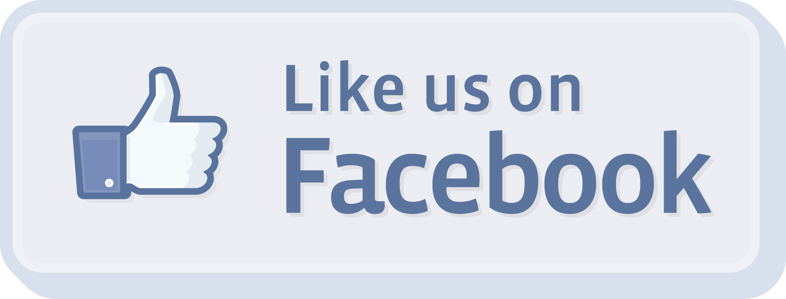

This page provides details on how to use the Bright by Three app. Please click on a title to display the corresponding details.
What is Bright by Three?
The mission of Bright by Three (formerly Bright Beginnings) is to provide a bright beginning for all Colorado children by helping families support their children’s physical, emotional, and intellectual development during the critical first three years of life. You can find more information about Bright by Three and our other sponsors under “about” tab at the top of your screen. The Bright by Three app is designed to bring information about how you can help {{babyName}} learn and develop directly to your phone several times per week. You will receive this information via messages that contain useful information and activities that you can engage in with {{babyName}}. You can set your own goals and earn badges and prizes for reading with your child and completing recommended activities.
The Bright by Three app is designed to bring information about how you can help {{babyName}} learn and develop directly to your phone several times per week. You will receive this information via messages that contain useful information and activities that you can engage in with {{babyName}}. You can set your own goals and earn badges and prizes for reading with your child and completing recommended activities.
What is Dashboard?
The dashboard is the screen through which you can access many of the features of the BB3 app. Tap on the appropriate button to set your goals, log minutes, track points, view your badges, change your settings, or access the BB3 Facebook page.
How can I set goals?
Set your reading goals! Looking at books together is a great way to teach
{{babyName}} new words and converse with
How do I earn points?
You earn points when you log your reading minutes and by completing challenges.
Log the number of minutes that you read with {{babyName}} each day. For every minute of shared reading, you will earn <1> point.
Challenges will display in your message library once a week.
These tasks are designated with a special icon
 .
Once you have completed the challenge, you can tap the
“We did it!” button at the bottom of the screen and
<10> bonus points will be added to your total.
You may also be invited to post a photo of you and
{{babyName}}
doing the activity for the opportunity to earn extra points.
.
Once you have completed the challenge, you can tap the
“We did it!” button at the bottom of the screen and
<10> bonus points will be added to your total.
You may also be invited to post a photo of you and
{{babyName}}
doing the activity for the opportunity to earn extra points.
How can I track my points?
The BB3 app automatically tracks points that you earn for reading aloud with {{babyName}} and completing challenges.Your point total will automatically update when you log minutes or earn challenge points. You can view your point total on the same screen where you log your minutes. You can earn badges and prizes for accumulating points. You can also view how you are doing compared with other users by tapping on the graph image. A progress bar will show you how close you are to meeting your weekly goal Insert image.
How do I earn badges and prizes?
Virtual badges will be awarded after you earn a
pre-determined number of points.
You can track the badges that you have earned by tapping on the badge button on the
dashboard  . Once you have earned a badge, a special
notification screen will display. Badges can be shared with friends on
Facebook by clicking on the upload image at the bottom of the notification
screen Insert image. For every <500> points you will be able to select
a book for {{babyName}} which will be mailed to your home.
. Once you have earned a badge, a special
notification screen will display. Badges can be shared with friends on
Facebook by clicking on the upload image at the bottom of the notification
screen Insert image. For every <500> points you will be able to select
a book for {{babyName}} which will be mailed to your home.
How can I change my password and log-in information?
You can change your password and log in information (including your email address
and user name) by tapping on the Settings button on the dashboard
 .
You can also choose to “Like” the BB3 Facebook page if you did not already
“Like” the BB3 Facebook page when you registered for the app
. When you
“Like” the BB3 Facebook page you will receive messages and information
from BB3 on your Facebook newsfeed.
.
You can also choose to “Like” the BB3 Facebook page if you did not already
“Like” the BB3 Facebook page when you registered for the app
. When you
“Like” the BB3 Facebook page you will receive messages and information
from BB3 on your Facebook newsfeed.
How can I access the BB3 Facebook page?
You can access the BB3 Facebook page by tapping on the
Facebook button on your dashboard
 . This will take you
to the BB3 Facebook page where you can read and comment
on posts with information about early child development.
You can receive posts from the BB3 Facebook page directly
to your Facebook newsfeed if you “Like” the BB3 page when
you register for the app or when you tap on the “Settings”
button on your dashboard .
. This will take you
to the BB3 Facebook page where you can read and comment
on posts with information about early child development.
You can receive posts from the BB3 Facebook page directly
to your Facebook newsfeed if you “Like” the BB3 page when
you register for the app or when you tap on the “Settings”
button on your dashboard .
How can I view messages?
You will receive 3-4 messages per week in your message library. Messages will contain information about different ways that you can help {{babyName}} learn. When a new message is available, a notification will display on the BB3 app icon and your tab bar. Some messages will contain a video of a parent and child performing the activity. Often messages will also have helpful links that you can tap on for additional information to help you complete the activity. Tap the “Why” button for more information about how the activity can help {{babyName}} learn INSERT IMAGE. Tap on the camera INSERT IMAGE to take a photo of your child performing the activity and share it on the BB3 Facebook page. You can also “rate” the message INSERT IMAGE, save it as a favorite INSERT IMAGE, or share it on Facebook INSERT IMAGE. Once you receive a message it will be saved in the message library and you can view it at any time.
How can I save favorite messages?
You can designate a message as favorite by tapping on the “Favorite” button on your message screen INSERT IMAGE. Once you have selected a message as a “favorite” it will be stored under your favorites tab. This option allows you to access your favorite messages quickly and easily. If no longer want a message in your favorites library, simply tap the “Remove favorite” button on the message screen under the favorites tab INSER IMAGE.
Other Questions?
If you cannot find the answer to your question in this tutorial or you are having any problems with the app, simply tap “Contact Us” and send us your question. We will email a response within 24-48 hours.